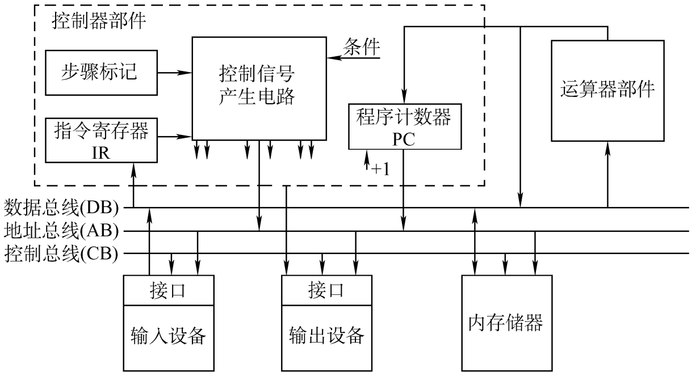
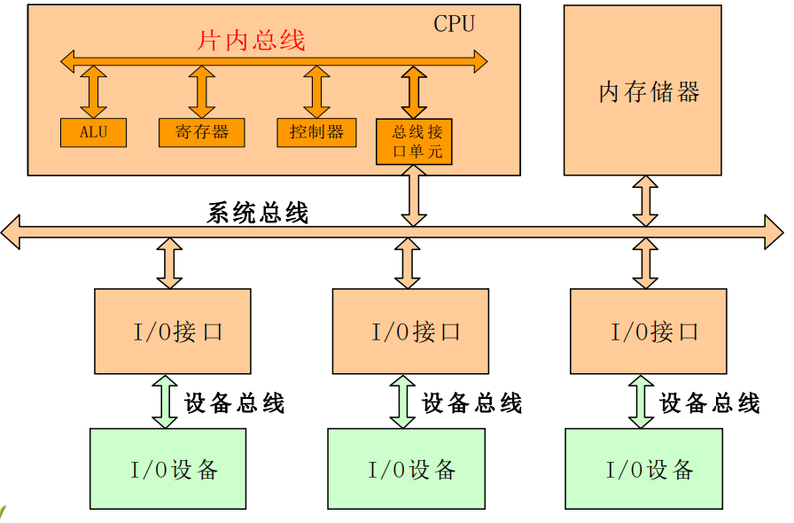
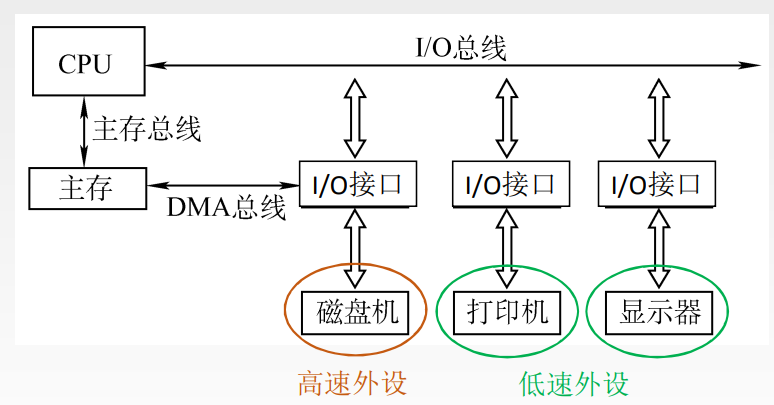
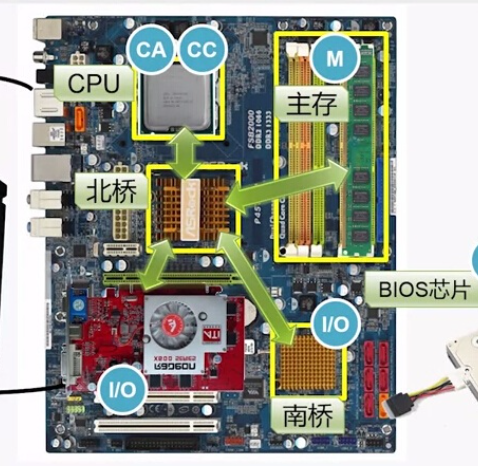
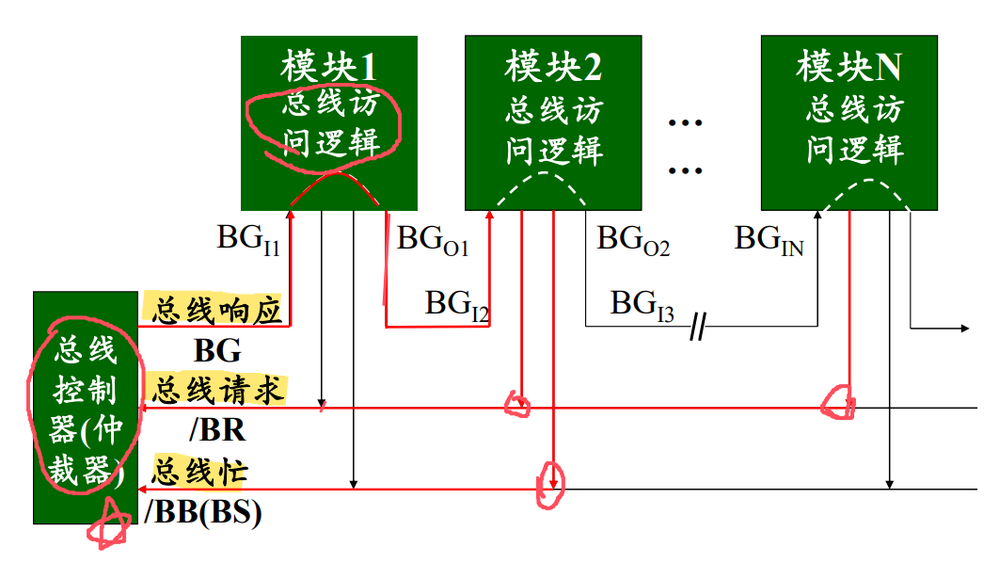
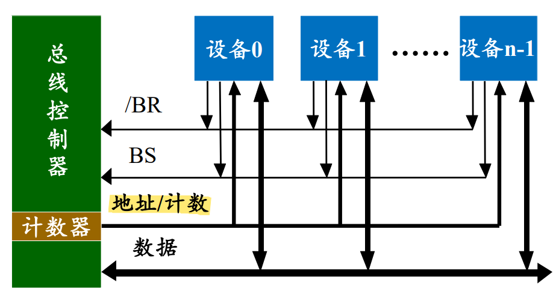
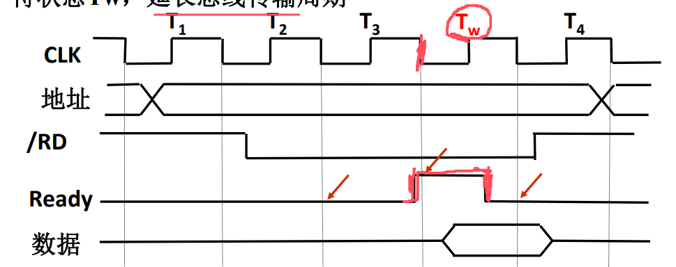
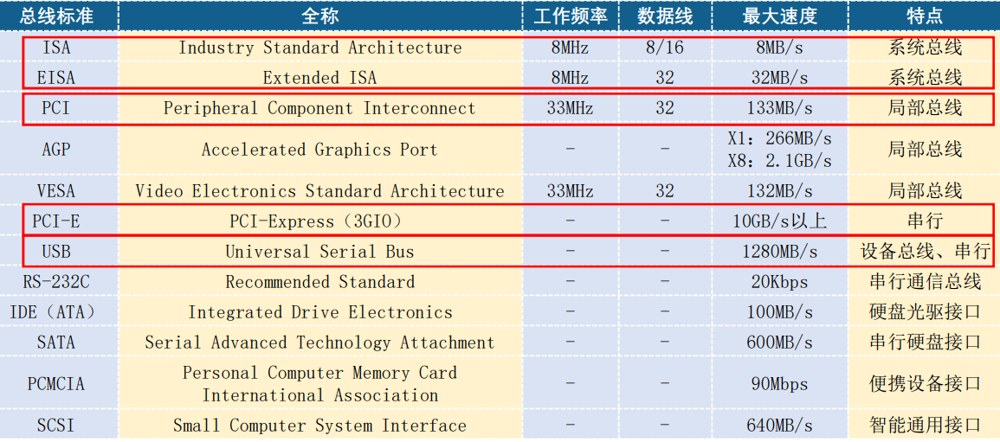

计算机组成原理就暂时学到这里吧，反正之后还是得重头学一遍的）
基本概念
1. 总线
-
总线是指在设备与设备之间的一组进行互连和传输信息的信号线，这里信息可以是指令、数据或地址等。一条总线可以为多个部件分时共享、作为共同传输信息的线路。
-
使用总线方便增添新的设备，使用相同总线标准的外设可在不同计算机间兼容；然而，总线带宽也会限制了整条总线的吞吐量，且不同设备间的数据传输率差异较大，也会造成影响；
-
总线的接口是CPU和主存、外设之间通过总线进行连接的逻辑部件，负责控制、缓冲、状态转换和程序中断等功能。

2. 总线分类
按照总线的功能：
- 内部总线（片内总线）：CPU内部连接各寄存器及运算器的总线；
- 系统总线：CPU和计算机系统中其他部件相互连接的总线；
- 数据总线：双向、与机器字长、存储字长有关
- 地址总线：单向 、与存储地址、 I/O地址有关
- 控制总线：一般为单向，负责传输指令
- 设备总线：计算机与中低速 IO 设备连接的总线，也称通信总线；

按照数据传输格式：
- 串行总线：只用一条传输线，每次传输 1bit ，广泛应用于长距离传输；
- 并行总线：采用多条传输线并行传输，总线的逻辑时序比较简单；由于工作频率较高，并行的信号线之间会产生干扰，无法持续提升工作频率。
按照时序控制方式：同步总线、异步总线；
3. 总线的性能指标
-
总线的传输周期(总线周期)：一次总线操作所需的时间（包括申请阶段、 寻址阶段、传输阶段和结束阶段）；
-
总线的时钟周期：计算机内部有统一的时钟，控制各阶段的同步执行；
总线周期可能包含多个时钟周期，也可能在同一时钟周期中有多个总线周期（只要同时利用上升沿和下降沿即可）。
- 总线宽度：指的是总线上同时能够传输的数据位数，如 32 位。
- 总线带宽（数据传输率）：即单位时间内总线上可以传输的数据位数，用每秒传输的最大字节数来衡量
MB/s.
如此看来，当我们采用并行总线，并试图通过增加总线宽度的方式增加带宽时，会因信号线之间发生干扰，使得时钟频率无法设置过高，从而不能提高带宽。
4. 总线结构
- 单总线：使用一条单一的系统总线来连接CPU、内存和 I/O 设备；
- 双总线：在CPU和主存之间专门设置了一组高速的存储总线；
- 三总线：计算机系统各部件之间采用三条各自独立的总线来构成信息通路， 这3条总线分别为主存总线、I/O总线和直接内存访问DMA总线。
- 主存总线主要用于处理器和主存之间数据交换
- I/O 总线用于多个外部设备与通道之间进行数据传送
- DMA 总线允许主存绕过 CPU 直接从外存取数据，有一套系统

- 南北桥结构：北桥负责连接高速部件，比如CPU和内存，这些部件需要快速的数据传输。而南桥则负责连接较慢的部件，如硬盘、USB接口等。

总线仲裁
同一时刻只能有一个设备控制总线传输操作，可以有一个或多个设备从总线接收数据。 将总线上所连接的各类设备按其对总线有无控制功能分为：
- 主设备：获得总线控制权的设备。
- 从设备：被主设备访问的设备，响应从主设备发来的各种总线命令。
总线作为一种共享设备，不可避免地会出现同一时刻有多个主设备竞争总线控制权的问题。因此，当多个主设备同时竞争主线控制权时，需要以某种方式选择一个主设备，优先获得总线控制权，这称为总线仲裁。
当然，如果让 CPU 作为唯一的主设备显然是最简单的场景，但所有总线操作均由 CPU 控制，会导致润得很慢。总线仲裁的基本要求：
- 总线主设备在使用总线前应发出总线请求
- 在得到授权后，主设备才能使用总线
- 使用完毕后，主设备应归还总线并发出归还通知
1. 集中仲裁
考虑引入一个总线仲裁器，由其判断优先级，使仲裁逻辑按一定的优先等级顺序确定哪个主设备能使用总线。就查询方式不同可分为：链式查询、计数器定时查询、独立请求方式。
1.1 链式查询
链式查询引入三条控制总线，分别表示总线允许（BusGrant）、总线请求（BusRequest）、总线忙（BusState）。
以下使用举例说明：假设优先级为1和为n的两个设备同时请求控制总线，以下是总线的工作流程：
- 两个设备同时向 BR 线发出信号；
- 总线控制部件收到 BR 信号，并判断 BS 空闲；此时置 BG=1 响应请求；
- BG 沿着优先级顺序遍历每一个设备。当发现第一个向 BR 线发出请求信号的设备后（此处为设备1），让其向 BS 线发出信号，占用总线；
- 同时，令 BG=0 以禁止更低优先级的申请者占用总线；
- 当使用完总线后，撤销 BS 信号以表示归还总线；
链式查询的优点是：
- 实现简单：只用几根控制线实现优先级控制。
- 便于增删总线上的设备：总线控制器的结构与部件（模块） 数量无关。
然而很明显，链式查询有以下缺点：
- 对电路故障敏感：若某部件故障，其后的所有部件甚至 整个查询链均不能正常工作；
- 优先级预设后不能改变，导致优先级低的设备有可能会因为找不到机会访问设备而“饿死”。

1.2 计数器查询
- 用一个计数器控制总线使用权，相对链式查询方式多了一组设备地址线（需要 条），同时少了一根总线响应线 BG。
- 具体来说，在 BS=0 的情况下（即总线空闲），启动计数器开始计数，计数值通过一组地址线发向各设备。当地址线上的计数值与请求总线的设备地址相一致时，该设备获得总线使用权，并把 BS 线置 “1” ，使计数器暂停计数。
- 可以通过设置计数初始值，从而改变优先次序：
- 如果令计数器每次从“0”开始，设备的优先级就按顺序排列，退化至链式查询；
- 如果令计数器从上一次的终点开始，各设备使用总线的优先级相等；

1.3 独立请求方式
- 每一个设备均有一对总线请求线 和总线允许线 ；
- 当总线上的部件需要使用总线时，经各自的总线请求线发送总线请求信号排队；当总线控制器按一定 的优先次序决定批准某个部件的请求时， 则给该部件发送总线响应信号。
- 优点是使得各个设备之间的信号传输更加独立而灵活，缺点是使得控制逻辑更加复杂。

2. 分布仲裁方式
- 在集中仲裁方式中，总是有仲裁器参与仲裁；而在分布式仲裁中 没有中央仲裁器，而是让多个仲裁器竞争使用总线。
- 当某设备需要使用总线时，将它的仲裁号发到仲裁总线上，各设备通过仲裁总线相互比较其仲裁号的大小，使得仲裁号CN值最大的设备获得总线使用权。
以下是分布仲裁的详细过程，本质上就是把除了仲裁号最大以外的设备都屏蔽：
-
各设备仲裁号 取反后输出到仲裁总线 上，利用 “线与” 逻辑实现各 的比较。若 线为低电平，则表示至少有一个主设备的 为 1；
-
欲申请占用总线的各设备向仲裁总线 AB 发出自己的 CN 值，各设备的对应位 分别从高到低依次进行比较，当更高位竞争结果 为 1 且 为高电平时，则使 Wi=1（保留仲裁位）；当 为低电平且 时，将使Wi=0（屏蔽该仲裁位）。
-
一旦发生 Wi=0，则该低电平将一直向右传递，使其竞争号后面的低位不能送上 AB 线 ；某设备的W0=1 ，则表示该设备竞争到总线，竞争获胜者取反后的仲裁号被保留在仲裁线 AB 上。
总线定时与传输
1. 总线传输过程
总线上数据的传输是在主设备控制下进行的，主模块（CPU、DMA等）有控制总线能力。总线完成一次数据传输分4个阶段：
-
申请阶段：欲使用总线的主模块提出申请，总线仲裁器确定把下一个传输周期的总线使用权指配给哪个模块（传输请求+仲裁阶段）
-
寻址阶段：获得总线使用权的主模块发出存储器地址或 I/O 端口地址。
从模块，启动！！
-
传输阶段：主模块和从模块之间进行数据传输（单向or双向）
-
结束阶段：主从模块的有关信息均从系统总线上撤除，让出总线使用权
总线数据传送方式：同步、异步、半同步、分离；
2. 同步方式
将总线传输周期分成若干自周期，系统采用一个统一的时钟信号来协调发送和接收双方的传送定时关系。
- CPU在T1时刻的上升沿给出地址信息
- T2 的上升沿给出读命令，与地址信息相符合的输入设备按命令进行一系列的内部操作， 在 T3 的上升沿来之前将 CPU 所需的数据送到数据总线上。
- CPU 在 T3 时钟周期内，将数据线上的信息传送到内部寄存器中。
- CPU在 T4（没画出来）的上升沿撤销读命令，输入设备不再向数 据总线上传送数据，撤销它对数据总线的驱动。

3. 异步方式
- 异步传输采用应答式传输方式。使用请求线（REQ）和应答线 （ACK）来协调传输过程而不依赖公共时钟信号。
- 由于没有固定的时间间隔，完全依靠传送双方相互制约的 “握手” 信号来实现定时控制。
- 根据“请求”和“回答”信号的撤销是否互锁，分为以下3种类型： 1）不互锁方式 2）半互锁方式 3）全互锁方式
例：在异步串行传输方式下，起始位为 1 位，数据位为 7 位，偶校验位为 1 位， 停止位为 1 位，如果波特率为 1200bit/s，求这时的有效数据传输率为多少？
波特率：单位时间内传送的二进制数据的位数，单位用 bps（位/秒）表示
比特率：单位时间内传送二进制有效数据的位数，单位用 bps 表示
有效数据传输率 = 比特率/波特率

4. 半同步方式
-
同步和异步方式的结合。有同步时钟，但传输周期（总线周期）可变。
-
增加一条信号线（如Ready），主模块监视该信号线查看选中的从模块是否准备好，如果未准备好则插入等待状态Tw，延长总线传输周期。

5. 分离方式
将传输周期（总线周期）分成两个子周期：
- 子周期_1：主模块申请总线，发出地址、控制命令（读或写）。使用完后释放总线，供其他模块使用。
- 子周期_2：从模块准备好数据后，申请总线，获准后将数据送至总线上。
- 特点：模块准备数据时不占用总线，此时总线处于空闲可利用状态，大大提高总线的利用率；
总线标准
